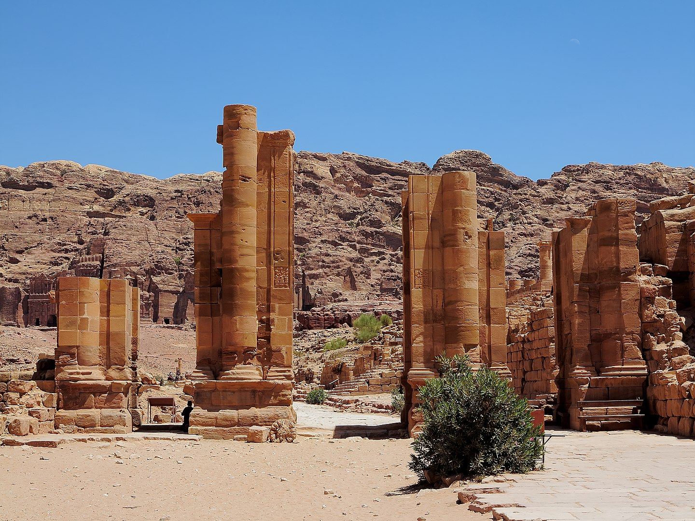
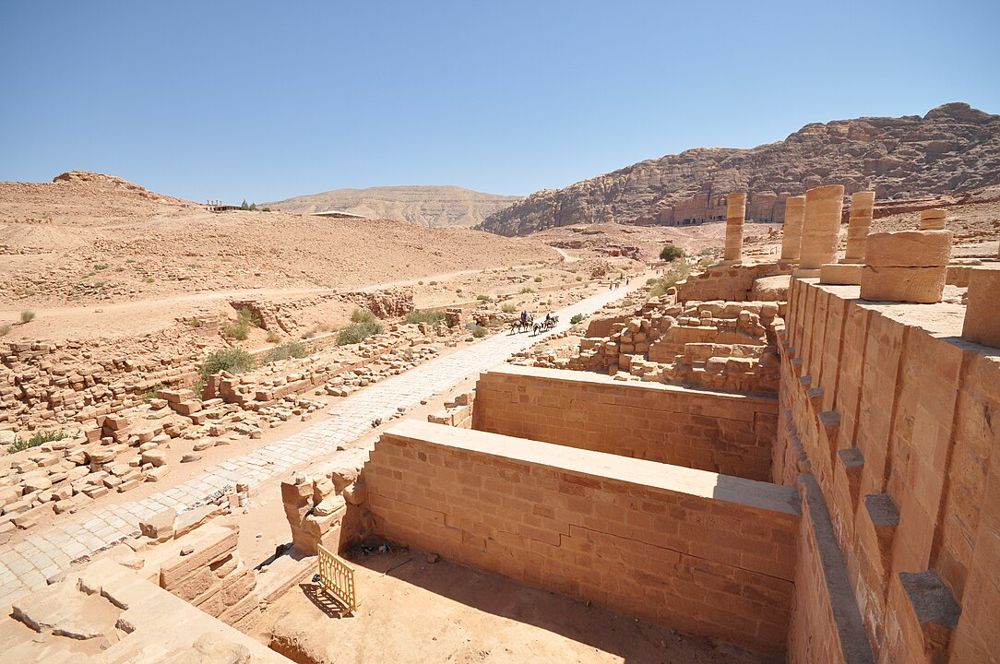
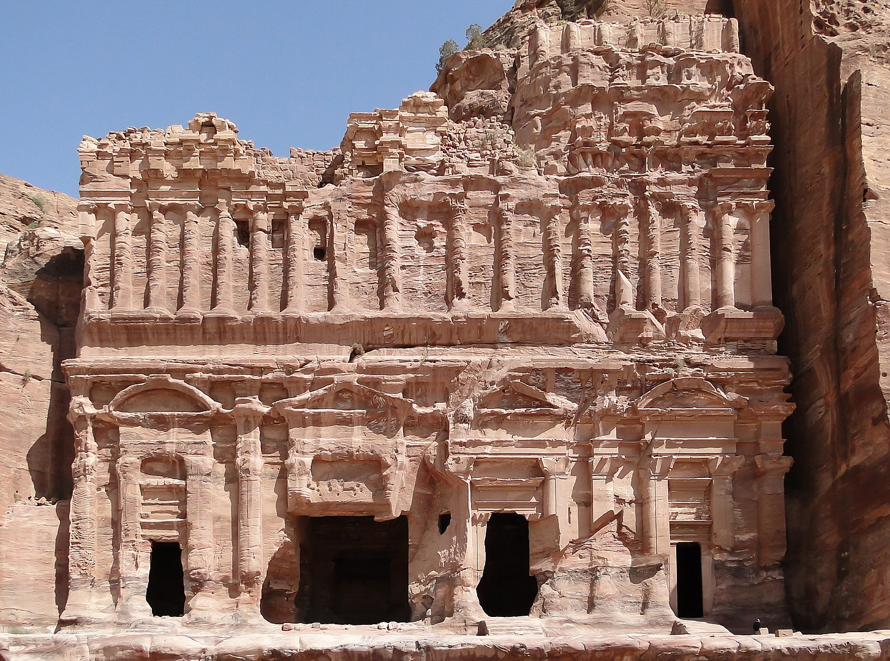
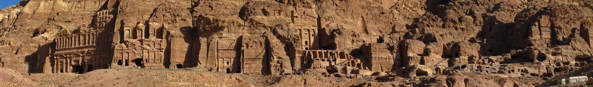

Petra Siq in 1947 (left) compared with the same location in 2013
When the Nabataeans were defeated by the Romans in 106 CE, Petra became part of the Roman province of Arabia but continued to flourish until changing trade routes caused its gradual commercial decline. After an earthquake (not the first) damaged the city in 551, significant habitation seems to have ceased. The Islamic invasion occurred in the 7th century, and a Crusader outpost is evidence of activity there in the 12th century. After the Crusades the city was unknown to the Western world until it was rediscovered by the Swiss traveler Johann Ludwig Burckhardt in 1812.
Excavations from 1958 on behalf of the British School of Archaeology in Jerusalem and, later, the American Center of Oriental Research added greatly to knowledge of Petra. The ruins are usually approached from the east by a narrow gorge known as the Siq (Wadi Al-Sīq). Among the first sites viewed from the Siq is the Khaznah (“Treasury”), which is actually a large tomb. Al-Dayr (“the Monastery”) is one of Petra’s best-known rock-cut monuments; it is an unfinished tomb facade that during Byzantine times was used as a church. Many of the tombs of Petra have elaborate facades and are now used as dwellings. The High Place of Sacrifice, a cultic altar dating from biblical times, is a well-preserved site. To support the ancient city’s large population, its inhabitants maintained an extensive hydrological system, including dams, cisterns, rock-carved water channels, and ceramic pipes. Excavations begun in 1993 revealed several more temples and monuments that provide insight into the political, social, and religious traditions of the ancient city. The ruins are vulnerable to floods and other natural phenomena, and increased tourist traffic has also damaged the monuments. In 1985 Petra was designated a UNESCO World Heritage site. See also Iranian art and architecture: Petra and Palmyra.
Petra is known primarily for its Hellenistic architecture. The facades of the tombs in Petra are commonly rendered in Hellenistic style, reflecting the number of diverse cultures which the Nabataens traded, all of which were in turn influenced by Greek culture. Most of these tombs contain small burials niches carved into the stone. Perhaps the best example of the Hellenistic style is seen in the Treasury, which is 24 meters (79 ft) wide and 37 meters (121 ft) tall and references the architecture of Alexandria. The facade of the Treasury features a broken pediment with a central tholos inside, and two obelisks appear to form into the rock at the top. Near the bottom of the Treasury are the twin Greek gods Castor and Pollux, who protect travellers on their journeys.
Near the top of the Treasury, two victories are seen standing on each side of a female figure on the tholos. This female figure is believed to be the Isis-Tyche, Isis and Tyche being the Egyptian and Greek goddesses, respectively, of good fortune. Another prime example of Hellenistic architecture featured in Petra is its Monastery, which stands at 45 meters (148 ft) tall and 50 meters (160 ft) wide; this is Petra's largest monument and is similarly carved into the rock face. The facade of this again features a broken pediment, similar to the Treasury, as well as another central tholos. The Monastery displays more of a Nabataen touch while at the same time incorporating elements from Greek architecture. Its only source of light is its entrance standing at 8 meters (26 ft) high. There is a large space outside of the Monastery, which is purposefully flattened for worship purposes. Formerly, in the Byzantine period, this was a place for Christian worship, but is now a holy site for pilgrims to visit.

The Hadrian Gate also known as the Temenos Gate
City centre

Petra Pool and Garden Complex
The Petra Pool and Garden Complex is a series of structures within the city center. Originally said to be a market area, excavations at the site have allowed scholars to identify it as an elaborate Nabataean garden, which included a large swimming pool, an island-pavilion, and an intricate hydraulic system. Ahead of the Petra Pool and Garden Complex lies Colonnaded street, which is among few artifacts of Petra that was constructed rather than natural. This street used to hold a semi-circle nymphaeum, which is now in ruins due to flash flooding, and used to hold Petra's only tree. This was intended to be a symbol for the peaceful atmosphere that the Nabataens were able to construct in Petra. Once the Romans took control of the city, Colonnaded street was narrowed to make room for a side walk, and 72 columns were added to each side.
The High Place of Sacrifice is located at the top of Jebel Madbah Mountain. The beginning of the hike is near Petra's theatre. From there, the site of The High Place of Sacrifice is around an 800-step hike. One commonly believed sacrifice that took place there was libation. Another common form of sacrifice that took place there was animal sacrifice; this is due to the belief that the tomb of the Prophet Aaron is located in Petra, which is a sacred site for Muslims. In honor of this, a goat was sacrificed annually. Other rituals also took place there, including the burning of frankincense.
Royal Tombs
The Royal Tombs of Petra are in the Nabatean version of Hellenistic architecture, but their facades have worn due to natural decay. One of these tombs, the Palace Tomb, is speculated to be the tomb for the kings of Petra. The Corinthian Tomb, which is right next to the Palace Tomb, has the same Hellenistic architecture featured on the Treasury. The two other Royal Tombs are the Silk Tomb and the Urn Tomb; the Silk Tomb does not stand out as much as the Urn Tomb. The Urn Tomb features a large yard in its front, and was turned into a church in 446 AD after the expansion of Christianity.
In 2016, archaeologists using satellite imagery and drones discovered a very large, previously unknown monumental structure whose beginnings were tentatively dated to about 150 BC, the time when the Nabataeans initiated their public building programme. It is located outside the main area of the city, at the foot of Jabal an-Nmayr and about 0.5 mi (0.8 km) south of the city centre, but is facing east, not towards the city, and has no visible relationship to it. The structure consists of a huge, 184 by 161 ft (56 by 49 m) platform, with a monumental staircase along its eastern side. The large platform enclosed a slightly smaller one, topped with a comparatively small building, 28 by 28 ft (8.5 by 8.5 m), which was facing east toward the staircase. The structure, second in size only to the Monastery complex, probably had a ceremonial function of which not even a speculative explanation has yet been offered by the researchers.

The Palace Tomb

The Royal Tombs in the southern part of the city
The Nabataeans worshipped Arab gods and goddesses during the pre-Islamic era as well as a few of their deified kings. One, Obodas I, was deified after his death. Dushara was the primary male god accompanied by his three female deities: Al-'Uzzā, Allat and Manāt. Many statues carved in the rock depict these gods and goddesses. New evidence indicates that broader Edomite, and Nabataean theology had strong links to Earth-Sun relationships, often manifested in the orientation of prominent Petra structures to equinox and solstice sunrises and sunsets. A stele dedicated to Qos-Allah 'Qos is Allah' or 'Qos the god', by Qosmilk (melech: king) is found at Petra (Glueck 516). Qos is identifiable with Kaush (Qaush) the God of the older Edomites. The stele is horned and the seal from the Edomite Tawilan near Petra identified with Kaush displays a star and crescent (Browning 28), both consistent with a moon deity. It is conceivable that the latter could have resulted from trade with Harran (Bartlett 194). There is continuing debate about the nature of Qos (qaus: bow) who has been identified both with a hunting bow (hunting god) and a rainbow (weather god) although the crescent above the stele is also a bow.
Nabataean inscriptions in Sinai and other places display widespread references to names including Allah, El and Allat (god and goddess), with regional references to al-Uzza, Baal and Manutu (Manat) (Negev 11). Allat is also found in Sinai in South Arabian language. Allah occurs particularly as Garm-'allahi: "god decided" (Greek Garamelos) and Aush-allahi: "gods covenant" (Greek Ausallos). We find both Shalm-lahi "Allah is peace" and Shalm-allat, "the peace of the goddess". We also find Amat-allahi "she-servant of god" and Halaf-llahi "the successor of Allah". Recently, Petra has been put forward as the original direction of Muslim prayer, the Qibla, by some in the revisionist school of Islamic studies, namely that the earliest mosques faced Petra, not Jerusalem or Mecca. However, others have challenged the notion of comparing modern readings of Qiblah directions to early mosques' Qiblahs as they claim early Muslims could not accurately calculate the direction of the Qiblah to Mecca and so the apparent pinpointing of Petra by some early mosques may well be coincidental.